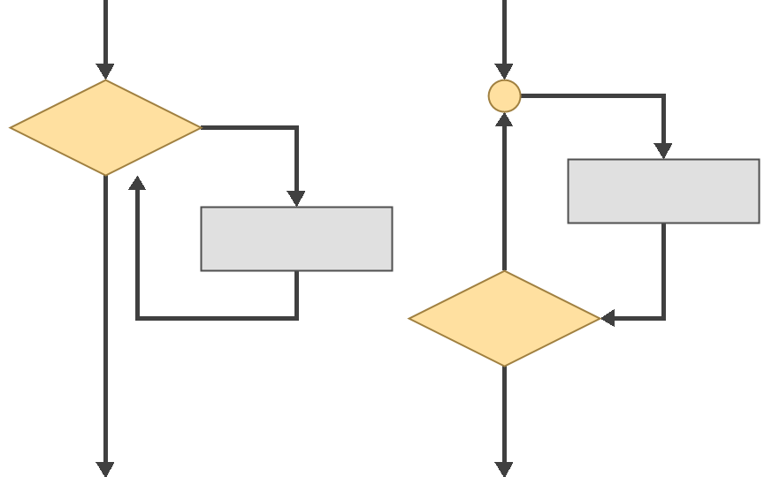

Циклична структура програма¶
До сада су се наредбе у твојим програмима извршавале редоследом којим су написане само једном, или, ако су биле део гране која се није извршила, ни једном. Након тога извршавање програма се прекидало.
Међутим, у програмима које свакодневно користиш, неке радње се могу понављати више пута. На пример, у Калкулатору можеш да уносиш изразе више пута. Није потребно да сваки пут изнова покрећеш Калкулатор када желиш да израчунаш вредност новог израза.
Такође, савремени програми не манипулишу са свега неколико података. На пример, ако желиш да израчунаш просечну оцену одељења на контролном задатку из Програмирања, морао би да декларишеш 30 променљивих, за сваког ученика по једну, па након тога учиташ 30 пута оцену, па напишеш 29 операција сабирања и резултат поделиш са 30.
Колико би било напорно написати програм који рачуна просечну оцену одељења из свих предмета? А тек просечну оцену за сва одељења из свих предмета у школи? Шта ако је потребно написати програм за општи случај, где број ученика у једном одељењу може да буде мањи или већи од 30 и где различита одељења имају различит број предмета?
Итерација подразумева понављање одређене процедуре, тако што се она у сваком кораку примењује на резултате њеног претходног извршавања, све док се не дође до жељеног резултата. Тако, решење за поменуте проблеме лежи у наредбама итерације које се зови и наредбе циклуса. Наредбе циклуса омогућују да се наредба или блок наредби изврше више пута, што доводи до цикличне структуре програма, циклуса или петље. На пример, уместо да декларишеш 30 променљивих и напишеш 29 операција сабирања, можеш да декларишеш једну променљиву у којој ћеш, само једном наредбом циклуса, 30 пута додати унету вредност.
{kind=link}
У програмском језику C цикличне структуре програма реализују се наредбама
циклуса for, while или do-while. Наредба циклуса for користи се за
циклусе са коначним, унапред одређеним бројем понављања. Наредба циклуса
while користи се за циклусе са неодређеним бројем понављања и извршава се све
док је задати услов испуњен. Услов се задаје на почетку, па се наредба
while назива и наредбом циклуса са предусловом. Наредба циклуса do-while
користи се, такође, за циклусе са неодређеним бројем понављања и извршава све
док је услов испуњен, али се услов задаје на крају, па се наредба do-while
назива и наредбом циклуса са постусловом.
Када будеш научио више о наредбама циклуса for, while и do-while, из
Методичке збирке задатака из основа програмирања
моћи ћеш да решаваш разне задатке са програмима цикличне структуре. Задаци у
којима се појављује
итерација сврстани су у
поткатегорије на следећи начин:
Основни алгоритми над серијама елемената
Угнежђене петље